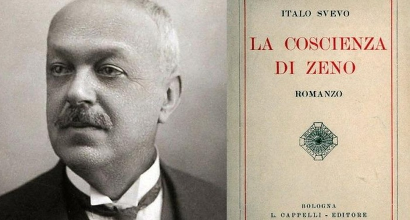
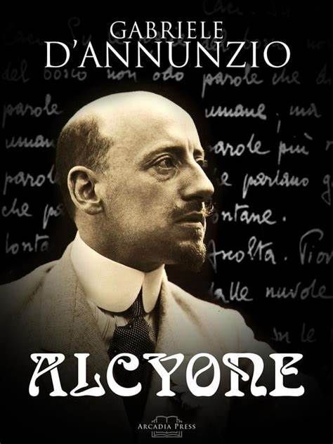

Italiano
Italo Svevo e La coscienza di Zeno
Italo Svevo, pseudonimo di Ettore Schmitz, è una delle voci più innovative e profonde del panorama letterario del Novecento italiano. Con la sua opera, rompe definitivamente con la tradizione ottocentesca del romanzo, che esaltava figure eroiche e morali, per introdurre una narrativa introspettiva, dominata da personaggi fragili, inadeguati e spesso incapaci di agire: i cosiddetti “inetti”.
Questo concetto trova piena realizzazione ne La coscienza di Zeno, il suo romanzo più celebre e rivoluzionario. L’opera si presenta come un lungo diario scritto dal protagonista, Zeno Cosini, nell’ambito di una terapia psicoanalitica. Tuttavia, fin dalle prime pagine, emerge l’ambiguità della narrazione: Zeno è un narratore inaffidabile, che mente sia a se stesso che al lettore, e la scrittura diventa un mezzo per giustificare le sue azioni più che per comprenderle. Questa impostazione originale introduce una forma di introspezione psicologica mai vista prima nella letteratura italiana.
Attraverso le sue memorie, Zeno racconta episodi carichi di simbolismo e significato psichico. L’“ultima sigaretta”, continuamente rimandata e mai davvero tale, diventa il simbolo della sua incapacità di decidere e di prendere in mano la propria vita. La morte del padre, segnata da un misterioso schiaffo, rappresenta un trauma irrisolto e il conflitto mai superato con la figura paterna. L’intera narrazione è pervasa da un tono ironico e disilluso, che culmina in un finale sorprendente: Zeno immagina che l’umanità sarà distrutta da un’“arma perfetta”, frutto della scienza e del progresso. In questo scenario apocalittico, Svevo mostra un atteggiamento critico nei confronti della modernità e del mito della razionalità.
Influenzato dalle teorie freudiane, Svevo integra la psicoanalisi nella struttura narrativa in modo originale e personale, evidenziando le ambiguità, le contraddizioni e le autoassoluzioni che caratterizzano la mente umana. La coscienza di Zeno non è solo il racconto di un uomo in crisi, ma è anche una riflessione profonda sull’identità, sul tempo e sull’impossibilità di conoscersi davvero.
Con questo romanzo, Svevo dà un contributo fondamentale alla letteratura europea del Novecento, spostando il centro del romanzo dall’azione all’interiorità, dalla realtà esterna al labirinto della coscienza. L’inetto, figura emblematica del suo universo, diventa così il simbolo di una condizione esistenziale moderna, sospesa tra desiderio di vivere e incapacità di farlo davvero.
Gabriele D’Annunzio e Alcyone
Gabriele D’Annunzio è il massimo esponente dell’estetismo e del decadentismo italiano, noto per la sua vita vissuta come un’opera d’arte e per l’ideale del superuomo che esalta il bello, l’azione e il piacere sopra ogni cosa.
La raccolta poetica Alcyone rappresenta l’apice del suo simbolismo e della sua capacità di evocare la natura in modo mistico e sensuale. In particolare, la poesia La pioggia nel pineto è un esempio sublime di fusione tra uomo e ambiente, dove i confini tra i sensi si dissolvono in un’atmosfera carica di sinestesie e immagini sonore. La natura diventa un’entità viva con cui il poeta dialoga, creando un’armonia panica che cancella ogni distinzione tra sé e il mondo esterno.
In Alcyone emerge anche la nostalgia per un mondo perduto, più semplice e genuino, che contrasta con la modernità alienante. D’Annunzio usa la poesia per celebrare la bellezza e per esprimere un senso di sacralità che si riflette nelle sue immagini solenni e ricche di simboli.
L’opera di D’Annunzio si pone in netto contrasto con quella di Svevo: mentre quest’ultimo svela le debolezze e le contraddizioni dell’animo umano, D’Annunzio esalta la potenza estetica e simbolica della vita, trasformando la letteratura in un’esperienza estetica totale.
Conclusione
Pur seguendo strade diverse, entrambi gli autori rappresentano la crisi dell’uomo moderno, diviso tra desideri e paure, tra impulso e razionalità. Svevo e D’Annunzio offrono due interpretazioni complementari della complessità dell’animo umano nel passaggio dal XIX al XX secolo.